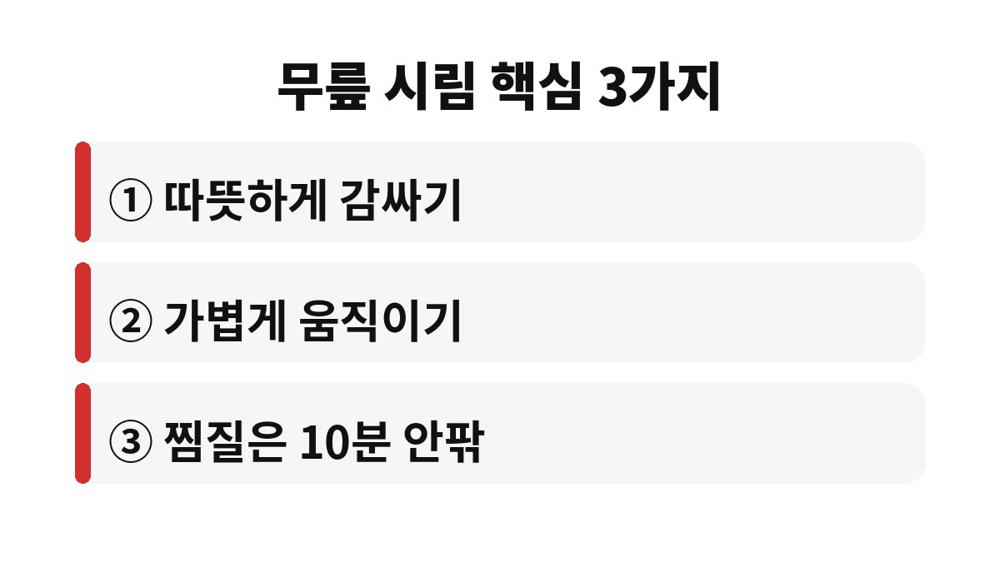

겨울 무릎 시림은 기온이 내려가면서 관절 주변 근육과 인대가 굳고 혈액순환이 느려져 생기는 경우가 가장 흔하다. 무릎이 시리다고 느끼는 40·50대라면 10분 습관 하나만 바꿔도 달라질 수 있는데, 오히려 하면 안 되는 행동도 있어서 끝까지 살펴볼 필요가 있다.
무릎은 몸에서 지방과 근육이 얇게 덮인 부위라서 찬 공기의 영향을 바로 받는다. 날씨가 추워지면 몸은 체온을 지키려고 말초 혈관을 좁힌다. 그러면 무릎 주변으로 가는 혈액이 줄어들고, 근육과 인대가 뻣뻣해진다. 뻣뻣해진 조직은 평소보다 작은 움직임에도 당기고 시린 느낌을 만든다.
여기에 활동량까지 줄면 상황이 더 나빠진다. 겨울에는 밖에 나가기 싫어서 앉아 있는 시간이 길어진다. 무릎 주변 근육이 약해지면 관절이 뜻밖의을 흡수하지 못하고, 같은 거리를 걸어도 더 쉽게 시리고 아프다. 결국 추위와 운동 부족이 서로를 키우는 악순환이 된다.
다만 시림이 오래 이어지거나 붓기와 열감이 함께 나타난다면 단순한 추위 때문만은 아닐 수 있다. 퇴행성 관절염 같은 문제가 숨어 있을 가능성도 있어서 증상을 가볍게 넘기지 않는 편이 좋다.
시린 느낌이 중심이라면 보통은 따뜻한 찜질이 도움이 된다. 따뜻한 온기는 굳은 근육을 풀고 혈액순환을 돕는다. 핫팩이나 따뜻한 수건을 무릎에 10분 안팎으로 대 주는 정도면 충분하다. 너무 오래 대거나 뜨겁게 하면 저온 화상이 생길 수 있으니 옷 위에 올리는 것이 안전하다.
반대로 무릎이 붓고 열이 나며 만지면 뜨거운 느낌이 든다면 이야기가 달라진다. 이때는 염증이 활발한 상태일 수 있어서 찜질이 오히려 불편함을 키울 수 있다. 시리기만 한지, 붓고 열이 나는지를 먼저 구분하는 것이 첫 번째 순서다.

첫째는 무릎을 따뜻하게 감싸는 것이다. 외출할 때 무릎 보호대나 두꺼운 바지를 입고, 집에서는 무릎담요를 덮어 두면 체감이 꽤 달라진다. 특히 잠자리에서 이불 밖으로 다리가 나오지 않게 하는 것도 도움이 된다.
둘째는 가볍게 자주 움직이는 것이다. 한 자세로 오래 앉아 있었다면 한 시간에 한 번은 일어나 걷거나 무릎을 천천히 폈다 구부리는 동작을 해 준다. 관절 안쪽의 윤활액은 움직일 때 순환하기 때문에 가만히 있는 것이 가장 좋지 않다.
셋째는 허벅지 근육을 지키는 것이다. 의자에 앉아 다리를 천천히 펴서 몇 초 버티는 동작만으로도 무릎을 받치는 힘을 키울 수 있다. 무리하게 쪼그려 앉거나 계단을 오래 오르내리는 운동은 피하는 편이 안전하다.
생활 속에서 바로 해 볼 수 있는 방법도 있다. 아침에 일어나자마자 바로 걷기보다 이불 속에서 발목을 돌리고 무릎을 천천히 굽혔다 펴는 동작을 열 번쯤 해 주면 좋다. 자는 동안 굳은 관절이 서서히 풀려서 첫걸음이 한결 편해진다. 출근길에 찬바람을 맞기 전에 따뜻한 물 한 잔을 마시고 몸을 데우는 것도 도움이 된다.
또 하나 신경 쓸 것은 체중이다. 몸무게가 늘면 걸을 때마다 무릎에 실리는 부담도 함께 커진다. 겨울에 먹는 양은 늘고 움직임은 줄기 쉬우니, 야식을 줄이고 하루 한 번 가볍게 걷는 시간만 챙겨도 겨울 무릎 시림이 심해지는 것을 막는 데 보탬이 된다. 신발도 중요해서 바닥이 미끄럽고 딱딱한 신발보다 쿠션이 있는 신발을 고르는 편이 좋다.
마지막으로 통증을 참고 버티는 습관은 피해야 한다. 시린 정도라고 넘기다가 계단을 오르내리기 어려워지고 나서야 병원을 찾는 경우가 적지 않기 때문이다. 초기에 관리를 시작할수록 부담은 훨씬 줄어든다.
며칠 쉬어도 나아지지 않거나, 밤에 자다가 깰 정도로 아프다면 진료를 받아 보는 것이 좋다. 무릎이 붓고 열이 나는 경우, 걸을 때 힘이 풀리는 느낌이 드는 경우도 마찬가지다. 부모님이 무릎이 시리다고 자주 말씀하신다면 참으시게 두지 말고 정형외과 진료를 권해 드리는 것이 좋다.
정리하면 겨울 무릎 시림은 보온, 가벼운 움직임, 허벅지 근력이라는 세 가지 기본기로 많이 줄일 수 있다. 오늘 저녁부터 무릎담요 하나 챙기고, 앉아 있다가 한 번씩 일어나 보는 것은 어떨까. 도움이 되었다면 구독으로 다음 글도 받아보면 좋겠다.
※ 이 글은 일반적인 건강 정보이며 진단이나 치료를 대신하지 않는다. 증상이 있다면 전문의 상담을 권장한다.